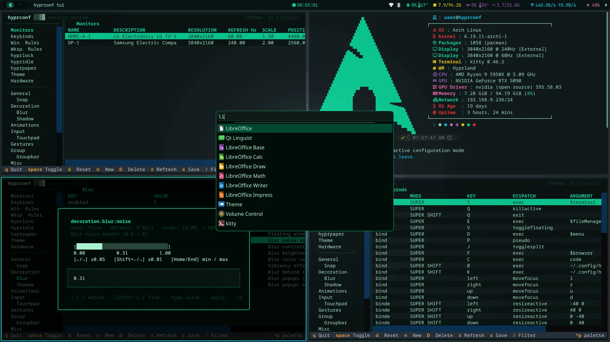

Arch Linux · Hyprland · Wayland
.hyprconf
Hyprland Configuration Suite
One command takes a live Arch ISO to a fully encrypted, themed, and hardened Hyprland desktop — the whole system dressed in a single theme, configurable from a terminal UI, private by default.
One-command install
Live ISO to a LUKS-encrypted, themed desktop — unattended, start to finish.
68 system themes
Applied across Hyprland, the bar, the terminal, editor, and apps at once.
Terminal UI
Keybinds, monitors, rules, and every Hyprland option in a Textual TUI.
Private by default
Full-disk encryption, a hardened base, and no telemetry out of the box.
$bash <(curl -fsSL hyprconf.sh)A personal Hyprland setup, shared openly as reference and inspiration. Fork it, take what's useful. Offered as-is — feature requests and issues may not be taken.
